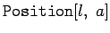
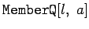
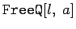
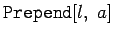
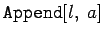
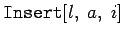
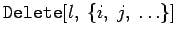
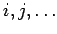
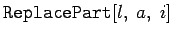
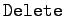

Mathematica bietet eine Reihe weiterer Operationen, mit denen Listen abgefragt, erweitert oder verkürzt werden können:
|  | liefert eine Liste der Positionen, an denen a in der Liste auftritt |
|  | prüft, ob a Element der Liste ist |
|  | prüft, ob a nirgendwo in der Liste auftritt |
|  | fügt a an den Anfang der Liste hinzu |
|  | fügt a am Ende der Liste hinzu |
|  | fügt a an der Stelle i zur Liste hinzu |
|  | löscht die Elemente mit den Nummern  aus der Liste |
|  | ersetzt das Element an der Stelle i durch a |
| Beispiel |
|
Mit  kann man z.B. die Liste l1 um das Glied a6 verringern: |